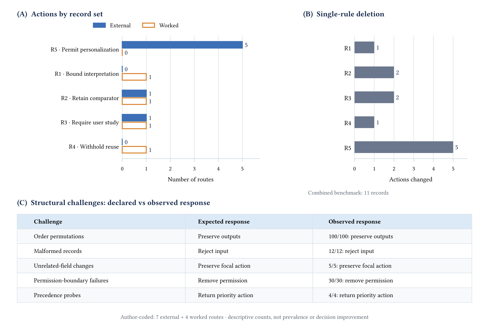
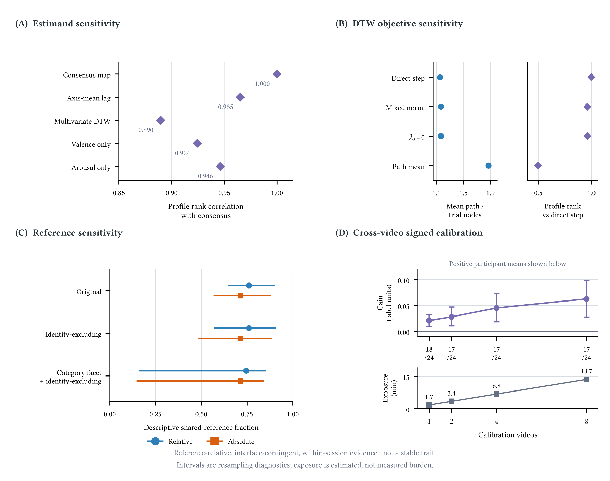
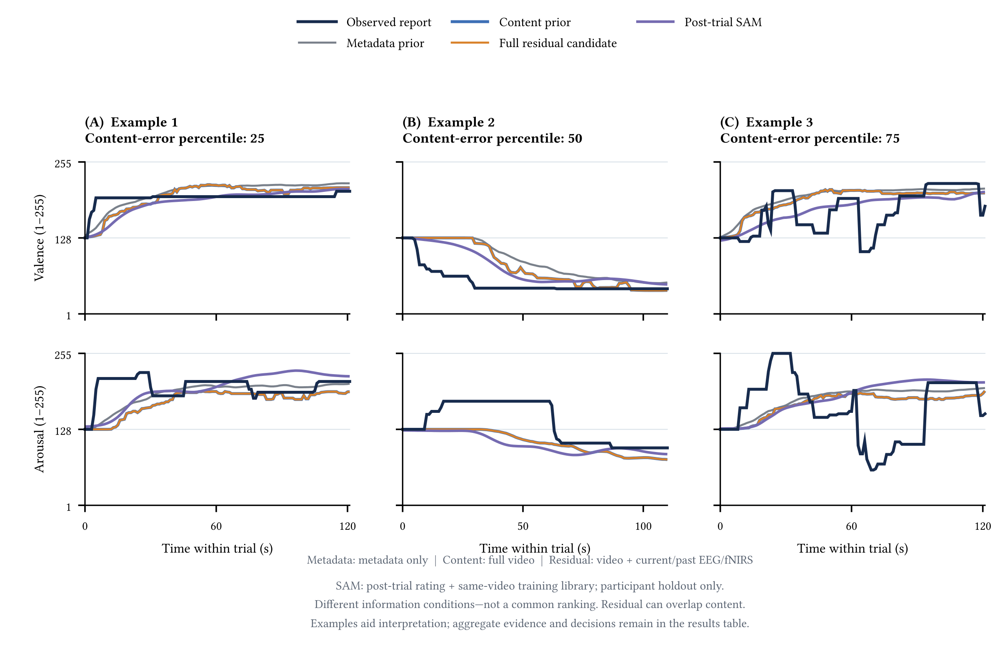

研究结果
规则测试RQ1
同一项菜单研究的两条作者整理记录得到不同结果：自动调整方案保留已测试的固定菜单对照；用户定制方案在已评估范围内获许可。 菜单案例记录 ↗

本研究的 4 条记录和 7 条外部记录覆盖五类行动，其中 5 条外部记录获有条件许可。删去任一规则，都改变了至少一项判定。
这些检查表明程序按规则运行，尚不能证明判断正确，或现实中的决策得到改善。
画像解释RQ2
同一份报告得到的时间差异，会随计算方法与参考群体改变。
参考曲线来自他人的自评报告，不是情绪的真实值。

更换对齐计算的目标后，画像排序相关降至 0.497；改变参考群体时，单个画像最多变化 0.459 秒。
这次测出的差异只能在已测试条件下解释，不能当作稳定的个人特征。R1 限定解释范围，不批准自动调整界面。
更多测量证据
同一次试验内，一个报告轴的时间对齐能改善另一个轴的拟合，但两轴共享手部操作、摇杆、任务与时钟。跨视频时，仅有小幅常量有符号偏移获得支持，不能据此确立持续的个人时间模式。
不同画像定义与共识定义的排序相关为 0.890–0.965。按路径长度归一化使时间偏差量增加 0.783 秒（95% CI 0.570–0.989）。共享参考下的相对与绝对方差比例为 0.760、0.714，描述的是相互依赖、重叠参考条件下的敏感性。
查看来源新增信息的作用RQ3
增加传感器或用户反馈，是否比已测试的对照方案带来更多改善？
增加传感
预测时间偏差量时，在不使用目标视频自评的条件下，受评估的传感器组合未证明比视频均值更好。误差以秒计。
| 指标 | 数值 |
|---|---|
| 视频均值 MAE | 0.763 s |
| 传感器组合 MAE | 0.794 s |
| 相对视频均值的增益（95% CI） | -0.031 s [-0.081,0.014] |
在这项任务中，额外传感尚未证明有益，R2 因此保留视频均值对照。这不否定所有生理传感，也不证明两种方案等效。
校准报告
从其他视频学到的校正，比仅用视频信息的校准误差更低。改善的是留出报告相对参考曲线的误差（图 4D）。
| 校准视频数 | 增益（标注单位） |
|---|---|
| 1 | 0.021 |
| 2 | 0.028 |
| 4 | 0.045 |
| 8 | 0.063 |
指标改善还不足以支持自动调整。R3 要求先开展预注册的实际使用研究，直接检验用户收益，并预先确定收益和伤害标准。
轨迹分析
另三项分析估计的是连续自评曲线，误差以标注单位计。它们补充证据，不增加正式审查记录。
| 条件与可用信息 | 匹配的对照 | MAE | 增益 |
|---|---|---|---|
| 视频内容：播放前获得完整视频 | 匹配的对照元数据：类别、时长、阶段 MAE 31.333 | MAE30.493 | 增益0.840 |
| 生理信号：内容预测 + 当前及过去的 EEG/fNIRS | 匹配的对照固定的内容先验 MAE 30.493 | MAE30.499 | 增益-0.006 |
| 试后反馈（SAM）：一对评分 + 同视频训练报告 | 匹配的对照已知视频群体先验，无目标参与者反馈 MAE 28.417 | MAE26.289 | 增益2.127 95% CI [0.557,3.878] |
误差（MAE）和增益均以标注单位计。MAE 越低越好，增益为对照误差减去本项误差。各项的信息时点和验证划分不同，不可作为统一排名。

在已发布视频库中，内容比元数据预测得更好；主条件下加入生理信号未证明进一步改善。试后 SAM 改善的是有反馈的重建，不能外推为无反馈或实时预测。
选择门槛与信息边界
相对误差下降： 0.069–0.208%. 按视频时长计算的标注时间为 1.7–13.7 分钟，不含准备时间，也不代表实测负担。
主残差门槛要求内层折预测至少改善 0.10 个标注单位。完整受评估流程的 MAE 为 30.499；关闭全部残差则逐点返回内容预测，这是另一种输出。0.00 与 0.05 的较宽松门槛在敏感性分析中得到小幅正估计。
三个匿名示例及其绘图坐标已有作者确认的公开范围，不包括完整数据档案、原始身份标识、参与者映射或刺激媒体。
查看来源按内容先验误差的第 25、50、75 百分位附近选取三个匿名试验示例，保留全部逐秒样本。示例帮助理解各项比较，不构成统一排名。
审查结论
四项用途需要分别决定。画像若要留到下次或换场景使用，还需补充稳定性、场景适用性及参考人群覆盖的证据。
| 具体用途 | 关键证据边界 | 对应行动 |
|---|---|---|
| 解释画像 | 证据边界结果受测量与参考条件影响。 | 对应行动限定解释与使用范围。 |
| 增加传感 | 证据边界在该任务中未证明优于匹配的对照方案。 | 对应行动保留已评估的对照方案。 |
| 部署校准 | 证据边界参考误差改善，尚未证明用户收益。 | 对应行动先开展情境内用户研究。 |
| 长期保留或迁移 | 证据边界稳定性、迁移与参考数据覆盖证据不足。 | 对应行动暂不长期保留或跨场景迁移。 |
案例详情
这个结果能说明什么？
想做什么
把一次实验中连续自评记录计算出的结果，解释为用户画像。
目前知道什么
结果会随操作界面、计算方法和参考曲线变化，也没有通过另一次实验验证。
下一步与理由
只在已测试的情境与条件下解释这个结果。
这限定了可以如何解释和使用结果，不等于批准个性化，也不证明存在稳定的个人属性。
什么证据可以触发重新审查
补充与解释目标、界面、估计方法、参考群体及复用期限匹配的验证。
记录中的责任角色
测量分析负责人
查看判断依据与正式记录
原始测量是试次结束后相对参考曲线的时间偏差画像。R1 限定其范围，是否许可个性化需要另行判断。
- 原始用途描述
- 计算并解释试次后的时间偏差画像。
- 正式证据描述
- 轨迹可以计算，但其幅度随界面、估计器和共享参考而变化，且没有重复 session。
- 正式判定
- 仅在已评估证据边界内使用该路径
- 来源中的复审触发条件（原文）
- Re-review before any durable-profile claim or after a new session, interface, estimator, or cross-video transfer study.
- 命中的规则
- R1 · Interpretation and use cannot exceed the evaluated evidence scope执行优先级: 40
| 字段 | 记录状态 |
|---|---|
| evidence.interpretation_scope | PARTIAL |
| route_capability | AVAILABLE |
这里展示仓库程序对已有记录的判定。复审条件概括尚需满足的要求，不是已观察结果，也不是对未来许可的承诺。
回到观看视频的人：研究所测试的时间校正减少了与参考曲线的误差，但还没有检验使用者能否受益。因此，部署校正前要先开展预注册的真实使用研究；长期保存画像仍需另行补足证据。